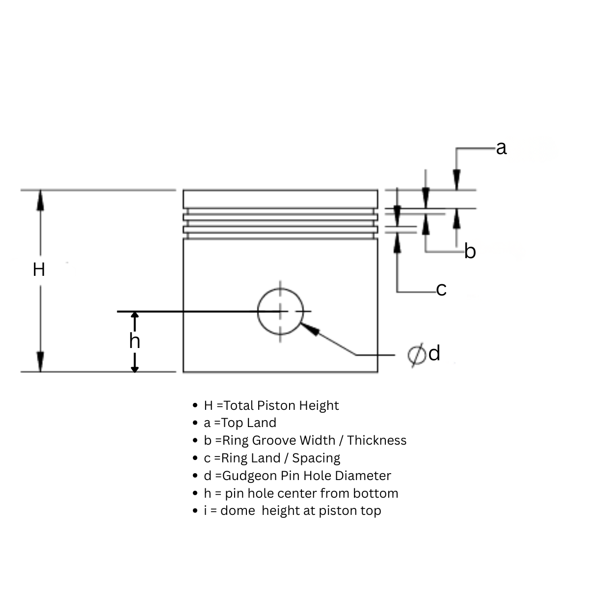
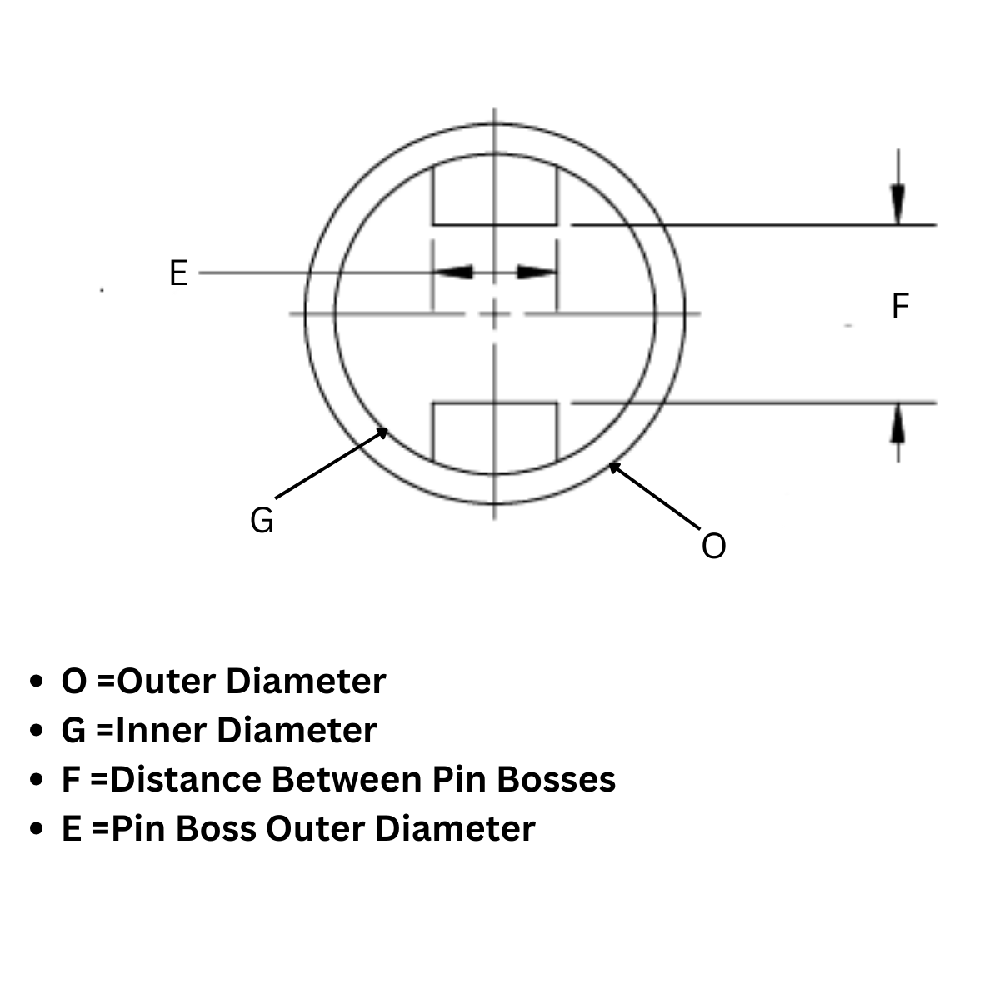

SolidWorks Piston Macro Generator
Side View Dimensions (Fig 1)

Total Piston Height (H):
Top Land (a):
Ring Groove Width (b):
Ring Land/Spacing (c):
Pin Hole Diameter (d):
Pin Hole Center (h):
Dome Height (i):
Bottom View Dimensions (Fig 2)

Outer Diameter (O):
Inner Diameter (G):
Distance Between Pin Bosses (F):
Pin Boss Outer Dia (E):
Generate SolidWorks Macro
Copy Code
VBA Macro Code: